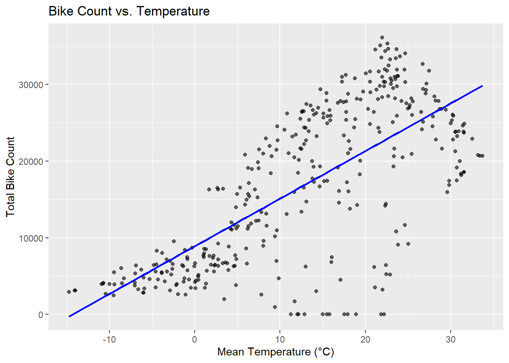
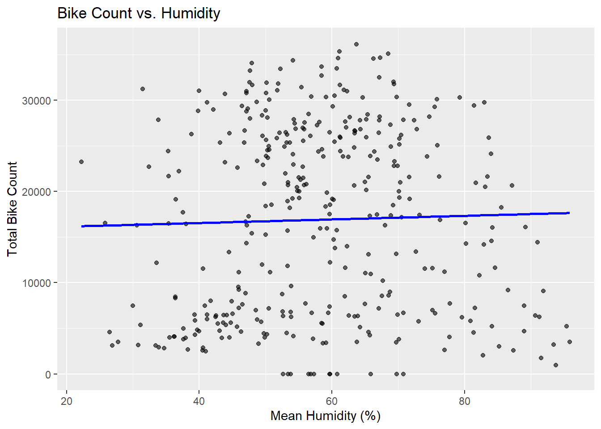

Warning: package 'readr' was built under R version 4.3.3
library(dplyr)
Warning: package 'dplyr' was built under R version 4.3.1
Attaching package: 'dplyr'
The following objects are masked from 'package:stats':
filter, lag
The following objects are masked from 'package:base':
intersect, setdiff, setequal, union
# read in data, argument added in the call to read_csv. fixed error for data with Western European charactersdata1 <-read_csv("SeoulBikeData.csv", locale=locale(encoding="latin1"))
Rows: 8760 Columns: 14
── Column specification ────────────────────────────────────────────────────────
Delimiter: ","
chr (4): Date, Seasons, Holiday, Functioning Day
dbl (10): Rented Bike Count, Hour, Temperature(°C), Humidity(%), Wind speed ...
ℹ Use `spec()` to retrieve the full column specification for this data.
ℹ Specify the column types or set `show_col_types = FALSE` to quiet this message.
# Summary statistics for numeric columnsnumeric_cols <-sapply(data1, is.numeric)summary(data1[, numeric_cols])
Rented Bike Count Hour Temperature(°C) Humidity(%)
Min. : 0.0 Min. : 0.00 Min. :-17.80 Min. : 0.00
1st Qu.: 191.0 1st Qu.: 5.75 1st Qu.: 3.50 1st Qu.:42.00
Median : 504.5 Median :11.50 Median : 13.70 Median :57.00
Mean : 704.6 Mean :11.50 Mean : 12.88 Mean :58.23
3rd Qu.:1065.2 3rd Qu.:17.25 3rd Qu.: 22.50 3rd Qu.:74.00
Max. :3556.0 Max. :23.00 Max. : 39.40 Max. :98.00
Wind speed (m/s) Visibility (10m) Dew point temperature(°C)
Min. :0.000 Min. : 27 Min. :-30.600
1st Qu.:0.900 1st Qu.: 940 1st Qu.: -4.700
Median :1.500 Median :1698 Median : 5.100
Mean :1.725 Mean :1437 Mean : 4.074
3rd Qu.:2.300 3rd Qu.:2000 3rd Qu.: 14.800
Max. :7.400 Max. :2000 Max. : 27.200
Solar Radiation (MJ/m2) Rainfall(mm) Snowfall (cm)
Min. :0.0000 Min. : 0.0000 Min. :0.00000
1st Qu.:0.0000 1st Qu.: 0.0000 1st Qu.:0.00000
Median :0.0100 Median : 0.0000 Median :0.00000
Mean :0.5691 Mean : 0.1487 Mean :0.07507
3rd Qu.:0.9300 3rd Qu.: 0.0000 3rd Qu.:0.00000
Max. :3.5200 Max. :35.0000 Max. :8.80000
# Check the unique values for the categorical variables# Identify categorical variables (character or factor columns)categorical_cols <-sapply(data1, function(x) is.character(x) ||is.factor(x))# List unique values for each categorical variable (#Date variable has many unique values. They are also inconsistent)lapply(data1[, categorical_cols], unique)
# convert the Date column into an actual date. 5304 failed to convert. Use the dmy() to convert. data1$Parsed_Date <-mdy(data1$Date)
Warning: 5304 failed to parse.
data1$Parsed_Date[is.na(data1$Parsed_Date)] <-dmy(data1$Date[is.na(data1$Parsed_Date)])# check results and the new column Parsed_Date and it got all actual dates.head(data1, 350)
# 4. Convert character variables into factorsdata1$Seasons <-as.factor(data1$Seasons)data1$Holiday <-as.factor(data1$Holiday)data1$`Functioning Day`<-as.factor(data1$`Functioning Day`) # Replace with exact column namehead(data1) # check the results confirming these three are factors
# Summarize bike rentals by functioning daydata1 %>%group_by(functioning_day) %>%summarize(mean_rentals =mean(rented_bike_count),total_rentals =sum(rented_bike_count) )
# A tibble: 2 × 3
functioning_day mean_rentals total_rentals
<fct> <dbl> <dbl>
1 No 0 0
2 Yes 729. 6172314
# subset data based on functioning day takes values of 'No' and 'Yes'operational_data1 <- data1 %>%filter(functioning_day =="Yes")# Verify the subset (8465 obs remain)table(operational_data1$functioning_day)
No Yes
0 8465
# 7. summarize across the hours. Use group_by(). Use: date, seasons, and holiday variables.# Create a new summarized datasetsummarized_data1 <- data1 %>%group_by(parsed_date, seasons, holiday) %>%summarize(# Sum of bike_count, rainfall, and snowfalltotal_bike_count =sum(rented_bike_count),total_rainfall =sum(rainfall_mm),total_snowfall =sum(snowfall_cm),# Mean of weather-related variablesmean_temperature =mean(temperature_c),mean_humidity =mean(humidity_percent),mean_wind_speed =mean(wind_speed_m_s),mean_visibility =mean(visibility_10m),mean_dew_point_temperature =mean(dew_point_temperature_c) )
`summarise()` has grouped output by 'parsed_date', 'seasons'. You can override
using the `.groups` argument.
# View the summarized datasethead(summarized_data1, 300)
# A tibble: 300 × 11
# Groups: parsed_date, seasons [300]
parsed_date seasons holiday total_bike_count total_rainfall total_snowfall
<date> <fct> <fct> <dbl> <dbl> <dbl>
1 2017-01-12 Winter No Holiday 9539 0 0
2 2017-02-12 Winter No Holiday 8523 0 0
3 2017-03-12 Winter No Holiday 7222 4 0
4 2017-04-12 Winter No Holiday 8729 0.1 0
5 2017-05-12 Winter No Holiday 8307 0 0
6 2017-06-12 Winter No Holiday 6669 1.3 8.6
7 2017-07-12 Winter No Holiday 8549 0 10.4
8 2017-08-12 Winter No Holiday 8032 0 0
9 2017-09-12 Winter No Holiday 7233 0 0
10 2017-10-12 Winter No Holiday 3453 4.1 32.5
# ℹ 290 more rows
# ℹ 5 more variables: mean_temperature <dbl>, mean_humidity <dbl>,
# mean_wind_speed <dbl>, mean_visibility <dbl>,
# mean_dew_point_temperature <dbl>
# 8. Recreate basic summary stats and then create some plots. Report correlation between numeric variables # Summary statistics for all numeric variablessummary(summarized_data1)
parsed_date seasons holiday total_bike_count
Min. :2017-01-12 Autumn:91 Holiday : 18 Min. : 0
1st Qu.:2018-03-04 Spring:92 No Holiday:347 1st Qu.: 6500
Median :2018-06-06 Summer:92 Median :17730
Mean :2018-06-01 Winter:90 Mean :16910
3rd Qu.:2018-09-08 3rd Qu.:26075
Max. :2018-12-11 Max. :36149
total_rainfall total_snowfall mean_temperature mean_humidity
Min. : 0.000 Min. : 0.000 Min. :-14.738 Min. :22.25
1st Qu.: 0.000 1st Qu.: 0.000 1st Qu.: 3.812 1st Qu.:47.92
Median : 0.000 Median : 0.000 Median : 13.838 Median :57.21
Mean : 3.568 Mean : 1.802 Mean : 12.883 Mean :58.23
3rd Qu.: 0.500 3rd Qu.: 0.000 3rd Qu.: 22.425 3rd Qu.:67.54
Max. :95.500 Max. :78.700 Max. : 33.742 Max. :95.88
mean_wind_speed mean_visibility mean_dew_point_temperature
Min. :0.6625 Min. : 214.3 Min. :-27.750
1st Qu.:1.2958 1st Qu.:1087.5 1st Qu.: -4.862
Median :1.6417 Median :1557.8 Median : 5.008
Mean :1.7249 Mean :1436.8 Mean : 4.074
3rd Qu.:1.9542 3rd Qu.:1877.2 3rd Qu.: 14.571
Max. :4.0000 Max. :2000.0 Max. : 25.038
library(ggplot2)
Warning: package 'ggplot2' was built under R version 4.3.3
# Scatter plot: Bike count vs. Temperature. There seems to have some outlier in 'total_bike_count'ggplot(summarized_data1, aes(x = mean_temperature, y = total_bike_count)) +geom_point(alpha =0.6) +geom_smooth(method ="lm", se =FALSE, color ="blue") +labs(title ="Bike Count vs. Temperature", x ="Mean Temperature (°C)", y ="Total Bike Count")
`geom_smooth()` using formula = 'y ~ x'

# Scatter plot: Bike count vs. Humidity. There seems to have some outliers in 'total_bike_count'ggplot(summarized_data1, aes(x = mean_humidity, y = total_bike_count)) +geom_point(alpha =0.6) +geom_smooth(method ="lm", se =FALSE, color ="blue") +labs(title ="Bike Count vs. Humidity", x ="Mean Humidity (%)", y ="Total Bike Count")
`geom_smooth()` using formula = 'y ~ x'

# Select several relevant numeric variablesnumeric_data <- summarized_data1 %>%ungroup() %>%# Temporarily remove groupingselect(total_bike_count, total_rainfall, total_snowfall, mean_temperature, mean_humidity, mean_wind_speed, mean_visibility)# Correlation matrix. Only keep 3 decimal places as the accuracy is not that highcor_matrix <-round(cor(numeric_data, use ="complete.obs"), 3) # Compute correlationsprint(cor_matrix)